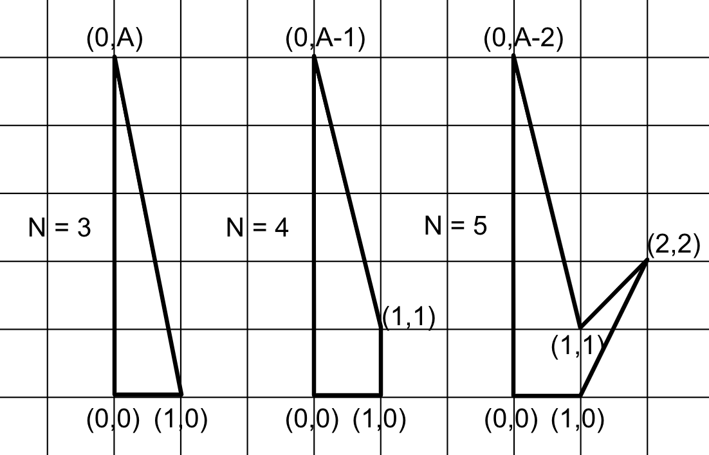
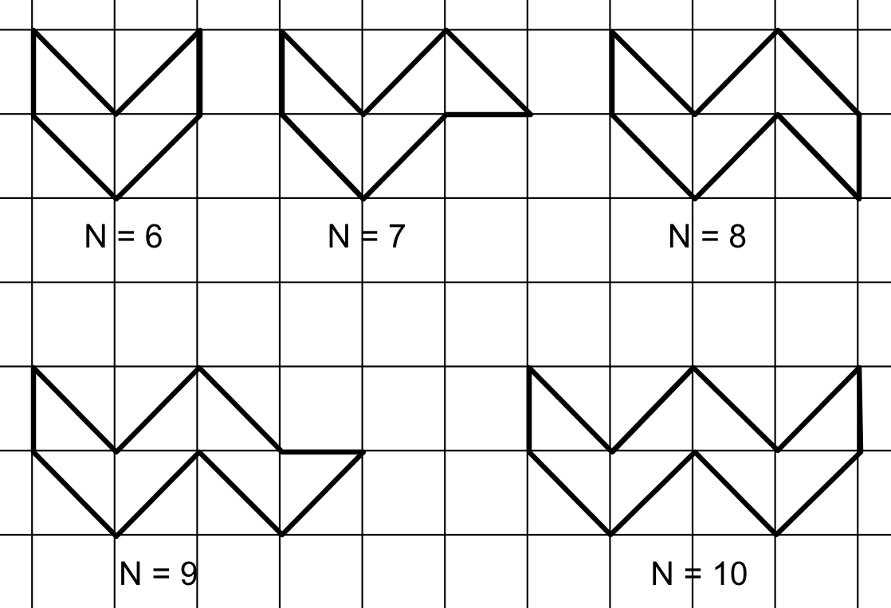
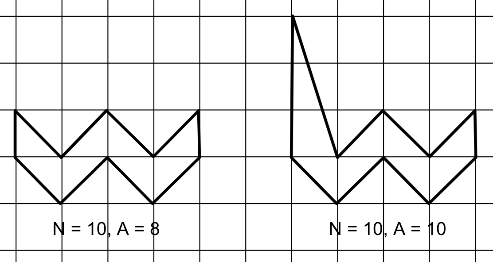

According to Pick's theorem, the
area of a simple polygon having integer vertex coordinates is $$$Area=i+\frac{b}{2}-1$$$, where
$$$i$$$ is the number of integer points inside the polygon and $$$b$$$ is the number of integer
points on its border. If we double this area, as in our problem statement, it follows that
$$$\mathbf{A}=2 \times Area = 2i+b-2$$$. Since $$$i \ge 0$$$ and $$$b \ge \mathbf{N}$$$, a lower bound on the
'doubled-area' $$$\mathbf{A}$$$ of a
polygon with $$$\mathbf{N}$$$ vertices is $$$\mathbf{A}=2i+b-2 \ge \mathbf{N}-2$$$. Therefore, if $$$\mathbf{A} \lt \mathbf{N}-2$$$, the
answer is IMPOSSIBLE. In what follows, we will show that this is a
tight
lower bound by constructing an $$$\mathbf{N}$$$ vertex simple polygon having a 'doubled-area' $$$\mathbf{A}$$$ for any given
$$$\mathbf{A} \ge \mathbf{N}-2$$$.
There are many ways to construct the necessary polygons. The following drawing shows possible constructions for $$$3 \le \mathbf{N} \le 5$$$.
These polygons have no internal integer points, therefore, by Pick's theorem, their 'doubled-area' is $$$b-2$$$. For example, for $$$\mathbf{N}=5$$$, we can verify that $$$b=\mathbf{A}+2$$$ by counting the integer points on the border. Therefore, the 'doubled-area' is $$$b-2=\mathbf{A}+2-2=\mathbf{A}$$$, which validates our construction. Similarly, it can be verified that we have achieved the desired area for $$$\mathbf{N}=3$$$ and $$$\mathbf{N}=4$$$ as well.
The time complexity of the construction is $$$O(1)$$$.
For $$$\mathbf{N} \gt 5$$$, the construction is a little more involved. Let us start with the base case, where the 'doubled-area' of the polygon is the smallest possible, namely, $$$\mathbf{N}-2$$$. The following drawing illustrates the construction for $$$6 \le \mathbf{N} \le 10$$$, but it can be generalized for arbitrary $$$\mathbf{N}$$$ by extending the zig-zag shape to the right.
The base polygon has $$$\mathbf{N}$$$ integer points on the border and no internal integer points, therefore, its 'doubled-area' is $$$\mathbf{N}-2$$$. If $$$\mathbf{A} \gt \mathbf{N}-2$$$, we just need to introduce $$$\mathbf{A}-\mathbf{N}+2$$$ more points on the border by say, lifting the top-left vertex up $$$\mathbf{A}-\mathbf{N}+2$$$ units as shown in the following drawing for $$$\mathbf{N}=10$$$ and $$$\mathbf{A}=10$$$.
The time complexity of the construction is $$$O(\mathbf{N})$$$.